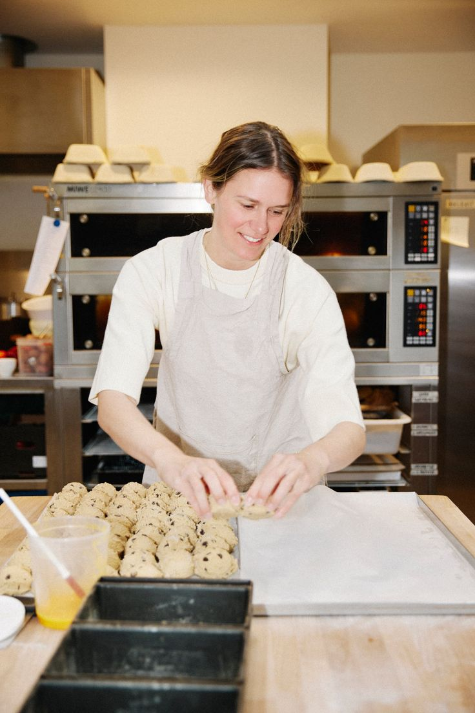
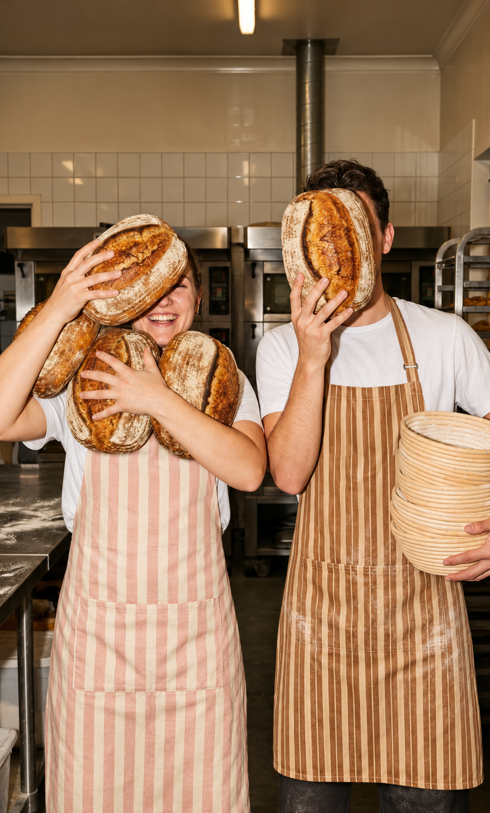
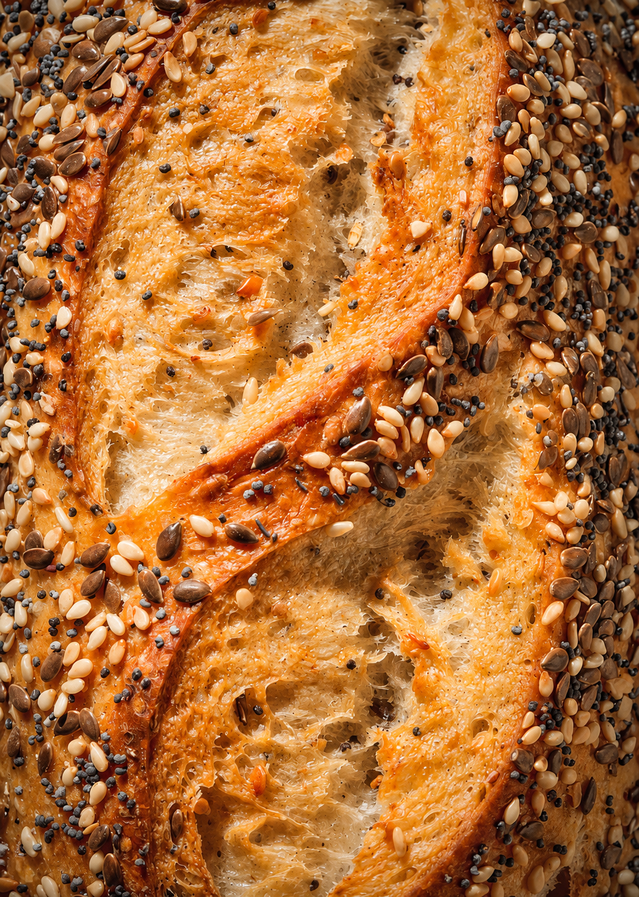

El corazón detrás de cada hornada
Somos una panadería pequeña con un horno grande y mucho cariño. Aquí el pan se hace con tiempo, buenas manos y ganas de compartirlo.

Somos una panadería pequeña con un horno grande y mucho cariño. Aquí el pan se hace con tiempo, buenas manos y ganas de compartirlo.

Todo empezó con harina, mantequilla y muchas ganas de probar. Entre intentos y recetas que no salían, descubrimos lo mucho que nos gustaba ver crecer una masa.
De ahí nació el gusto por hornear: por el olor que llena la casa, por el primer pan que se parte caliente y por compartirlo con los demás.
Eso queremos seguir compartiendo: pan hecho con calma, para disfrutar en buena compañía.
Miga & Harina es una panadería cercana, creativa y cuidadosa con los pequeños detalles.
Detrás de cada pieza hay personas que madrugan, amasan y hornean con cariño, y que se alegran cuando alguien regresa por su pan favorito.

Pan dulce, pan salado y repostería, siempre frescos y hechos con cuidado.

Suave, esponjoso y con ese toque de azúcar que siempre se antoja.

Cortezas doradas y migas aireadas, con fermentaciones lentas.

Hojaldres, galletas y pequeños antojos con mantequilla de verdad.
Así llega el pan a tu mesa, paso a paso.

01
Elegimos harina, mantequilla y productos frescos.

02
Mezclamos y amasamos a mano, sin prisas.

03
Le damos tiempo para que crezca y gane sabor.

04
Sale del horno dorado, caliente y listo para ti.
Hornear es lo que más disfrutamos, y se nota en cada pieza.
Buen pan empieza con buenos ingredientes, elegidos con atención.
Te recibimos como en casa y te ayudamos a elegir tu pan.